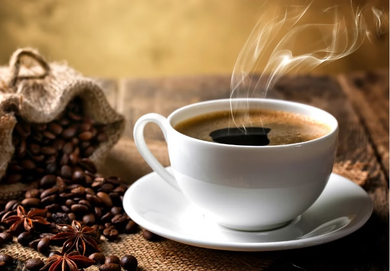

Nuestras recetas recomendadas
Café con helado de vainilla
Ingredientes:
- Café en grano DeCaffé Americano molido medio.
- Helado de Vainilla.
- Jarabe de Caramelo.
Instrucciones:
- Prepara café concentrado con el café americano y deja enfriar.
- Llena un vaso alto con hielo.
- Agrega una cucharada de jarabe de caramelo en el fondo del vaso.
- Vierte el café frío sobre el hielo y mezcla con el jarabe de caramelo.
- Añade una bola de helado de vainilla y decora con un poco más de jarabe de caramelo si lo deseas.
Mocha Dominicano
Ingredientes:
- Café en grano DeCaffé Dominicano molido medio.
- 30 ml de chocolate caliente.
- 30 ml de leche evaporada.
Instrucciones:
- Prepara un espresso doble con el café dominicano.
- Calienta el chocolate y la leche evaporada en un cazo hasta que estén bien mezclados y calientes.
- Vierte el espresso en una taza grande y añade la mezcla de chocolate caliente con leche evaporada.
- Remueve bien para combinar todos los sabores.
- Decora con un poco de cacao en polvo o virutas de chocolate.
Café Corretto
Ingredientes:
- Café en grano Decaffé Italiano molido fino.
- 30 ml de grappa, brandy o sambuca (licor italiano)
Instrucciones:
- Prepara un espresso en una máquina de café.
- Sirve el espresso en una taza pequeña o una copa de vidrio.
- Agrega el licor italiano (grappa, brandy o sambuca) al espresso caliente.
- Remueve suavemente para mezclar el licor con el café.
- Disfruta de este delicioso café italiano con un toque de alcohol.
